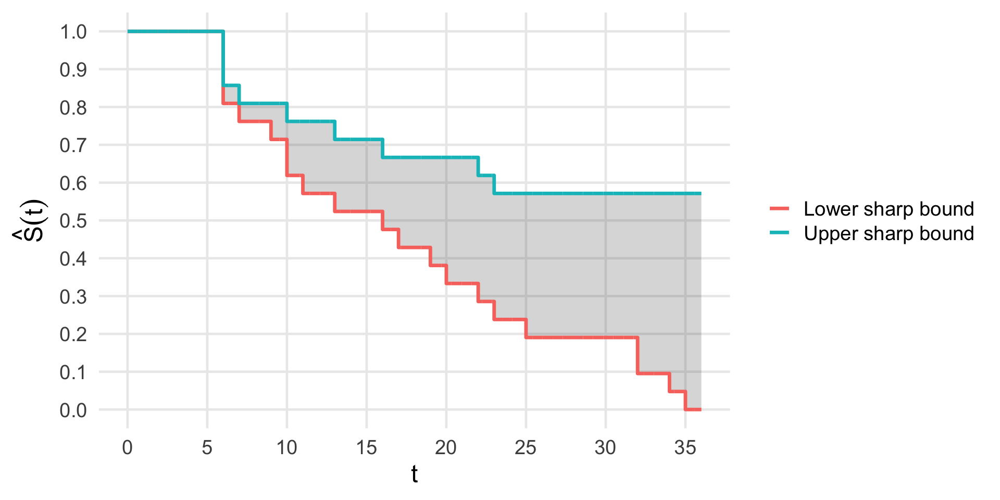
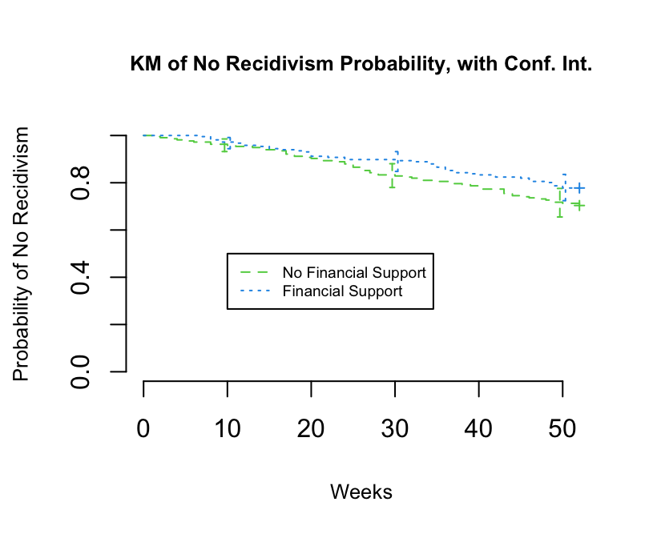
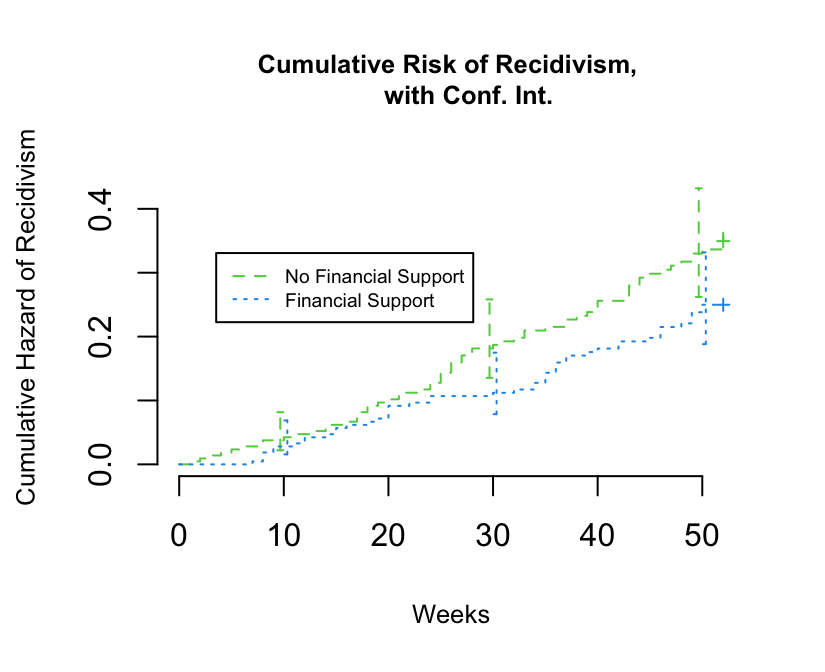

load("/Users/asarvet/Library/CloudStorage/OneDrive-UniversityofMassachusetts/UMass/Teaching/Topics/2026/Lectures/Unit4-Survival/Data/rossi.rda")
rossi.recidivism.km <- survfit(Surv(week, arrest) ~ fin,
data = rossi)
plot(rossi.recidivism.km, lty = 2:3, col = 3:4, mark.time = TRUE,
xlab = "Weeks",
ylab = "Probability of No Recidivism",
axes = FALSE,
conf.times = c(10,30,50),
main = "KM of No Recidivism Probability, with Conf. Int.",
cex = 0.6, cex.main = 0.8, cex.lab=0.8)
axis(1)
axis(2)
legend(10, .5, c("No Financial Support", "Financial Support"),
lty = 2:3, col = 3:4, cex = 0.6)Non-parametric estimators and group comparisons
Agenda
- Logistics update:
- Project description: Due today (submit on canvas)
- Progress meeting: Tuesday, April 21,22 (sign-up at link in announcement, must sign up by Monday, April 20)
- New dates for presentations, April 28, 30 (presentation date assigned April 20)
- (Shorter) Homework 4 (with extra credit opportunity): Due May 7
Agenda
- Review: Kaplan-Meier
- Nelson-Aalen: cumulative hazards estimator
- log-rank tests, intro hazard regression
Review

Review
Discrete-time review
- 4 “survival” random variables
- \(T\)
- \(T^* = min(X, T)\)
- \(T_L = I(C=1)X + I(C=0)T\)
- \(T_U = I(C=1)\infty + I(C=0)T\)
- 4 “hazards”
- \(\lambda(k) = P(T=k \mid T\geq k)\)
- \(\lambda_L(k) = P(T_L=k \mid T_L\geq k)\)
- \(\lambda_U(k) = P(T_U=k \mid T_U\geq k)\)
- \(\lambda^*(k) = P(T^*=k \mid T^* \geq k, X>k)\)
Review
Discrete-time review
- No censoring
- \(S(t) = \prod\limits_{k=0}^t\Big(1-\lambda(k)\Big)\)
- Censoring, no assumptions
- Sharp lower bound: \(S_L(t) = \prod\limits_{k=0}^t\Big(1-\lambda_L(k)\Big)\)
- Sharp upper bound: \(S_U(t) = \prod\limits_{k=0}^t\Big(1-\lambda_U(k)\Big)\)
- Independent censoring: \(T \perp X\)
- \(S(t) = \prod\limits_{k=0}^t\Big(1-\lambda^*(k)\Big)\)
- Next week: using causal reasoning to justify, relax assumptions and deploy explicit causal methods
Review
The KM estimator of the survival function \(S(t)=P(T > t)\) is \[\widehat{S}(t) = \prod_{j: \tau_j \leq t} \frac{ r_j - d_j } {r_j} = \prod_{j: \tau_j \leq t} \left(1 - \frac{d_j}{r_j}\right), \text{where}\]
- \(\tau_1, \ldots, \tau_K\) are the \(K\) distinct observed event times.
- \(d_j\) is the number of deaths at \(\tau_j\)
- \(c_j\) is the number of censored observations in the interval \([\tau_{j}, \tau_{j+1})\)
- Censoring times tied at \(\tau_j\) are included in \(c_j\)
- \(r_j\) is the number of individuals ``at risk’’ right before \(\tau_j\) (i.e. everyone who has an event or is censored at or after that time).
- Hence, \(r_j = r_{j-1} - d_{j-1} - c_{j-1}\)
- Alternatively, \(r_j = \sum_{l \ge j}(c_l+d_l)\)
Censoring…
\(T^*\): \({\color{blue}6^+},6,6,6,7,{\color{blue}9^+,10^+},10,{\color{blue}11^+},13,16,{\color{blue}17^+}\) \({\color{blue}19^+,20^+},22,23,{\color{blue}25^+,32^+,32^+,34^+,35^+}\)
| Values of \(t\) | # \(T<t, C>t\) | \(1-\lambda^*(t)\) | \(\widehat{S}_{KM}(t)\) |
|---|---|---|---|
| \(0 \le t < 6\) | \(21\) | – | \(1\) |
| \(6 \le t < 7\) | \(21\) | \(18/21\) | \(18/21 = 0.86\) |
| \(7 \le t < 10\) | \(17\) | \(16/17\) | \((18/21)(16/17) = 0.81\) |
| \(10 \le t < 13\) | \(15\) | \(14/15\) | \((18/21)(16/17)(14/15) = 0.75\) |
| \(13 \le t < 16\) | \(12\) | \(11/12\) | \((18/21)(16/17)(14/15)(11/12) = 0.69\) |
| \(16 \le t < 22\) | \(11\) | \(10/11\) | \((18/21)(16/17)(14/15)(11/12)(10/11) = 0.63\) |
| \(22 \le t < 23\) | \(7\) | \(6/7\) | \((18/21)(16/17)(14/15)(11/12)(10/11)(6/7) = 0.54\) |
| \(23 \le t < 36\) | \(6\) | \(5/6\) | \((18/21)(16/17)(14/15)(11/12)(10/11)(6/7)(5/6) = 0.45\) |
Censoring…

Confidence intervals for the KM
A pointwise 95% confidence interval (CI) could be based on \[ \widehat{S}(t) \pm z_{1-\alpha/2} \times \text{s.e.}[\widehat{S}(t)], \] with \(\text{s.e.}[\widehat{S}(t)]\) estimated using Greenwood’s formula.
- What is a potential problem with this approach?
- This approach can yield values \(>1\) or \(<0\).
Confidence intervals for the KM
- The better approach is to use the log-log transformation and base intervals around \[L(t) = \log[-\log[S(t)]]\]
- To transform back, use \(S(t)=\exp[-\exp[L(t)]]\).
- In R, use the option conf.type = “log-log”. The default transformation in R is \(L(t) = -\log[S(t)]\), i.e. conf.type = “log”.
Log-log transforamtion for CI
- 1. Define \(L(t) = \log[-\log[S(t)]]\).
- 2. Form a 95% CI for \(L(t)\), \((\widehat{L}(t)-A,\widehat{L}(t)+A),\) with \(A= 1.96 \times \text{s.e.}[\widehat{L}(t)].\)
- 3. Apply \(S(t)=\exp[-\exp[L(t)]]\) to obtain the confidence bounds for the 95% CI on \(S(t)\), \[ \left( \exp[-e^{(\widehat{L}(t)+A)}],\exp[-e^{(\widehat{L}(t)-A)}]\right) \]
- 4. Substituting \(\widehat{L}(t)=\log[-\log[\widehat{S}(t)]]\) back into the above bounds yields confidence bounds of \[\left([\widehat{S}(t)]^{e^A},[\widehat{S}(t)]^{e^{-A}}\right)\]
Log-log transforamtion for CI - cont.
Since
- \(0 \leq S(t) \le 1\),
- \(0 \leq -\log[S(t)] < \infty\), and
- \(-\infty < \log[-\log[S(t)]] < \infty,\)
- then: the CI will be in the proper range (i.e. between 0 and 1) when transformed back.
The Cumulative Hazard (Nelson–Aalen) Estimator
Recall:
- Cumulative hazard function: \(\Lambda(t) := \int_0^t \lambda(u)du\)
- \(\Lambda(t) = -log[S(t)]\)
- \(S(t) = exp[-\Lambda(t)]\)
The Cumulative Hazard (Nelson–Aalen) Estimator
Discrete time intuiton…
- Kaplan Meier leveraged: \(S(t) = \prod\limits_{k=0}^t\Big(1-\lambda(k)\Big)\)
- Nelson-Aalen will leverage: \(S(t) = exp\Big(-\sum\limits_{k=0}^t\lambda(k)\Big)\)
- Remember, under independent censoring \(\lambda(k) = \lambda^*(k)\), so we can use whichever estimator we like!
Nelson–Aalen Estimator
Continuous time:
- The cumulative hazard \(\Lambda(t)\) can be approximated by a sum over \(j\) intervals, \[\Lambda(t) \approx \sum_{j} \lambda_j \Delta\] where
- \(\lambda_j\) is the value of the hazard in the \(j^{th}\) interval
- \(\Delta\) is the width of each interval
Nelson–Aalen Estimator
Continuous time:
- Since \(\widehat{\lambda}_j \Delta\) is approximately the probability of having an event in an interval \(j\), conditional on having survived until the beginning of the interval, \(\Lambda(t)\) can be approximated further as \[\Lambda(t) \approx \sum_{j} \lambda_j \Delta \approx \sum_{j} \frac{d_j}{r_j}\]
Nelson–Aalen Estimator
- Thus, the Nelson–Aalen (NA) estimator can be written as \[\widehat{\Lambda}_{\tiny NA}(t) = \sum_{t_j \leq t} \frac{d_j}{r_j}\]
- From \(\widehat{\Lambda}_{\tiny NA}(t)\), an alternative to the KM estimator of \(S(t)\) can be calculated as \[\widehat{S}_{\tiny FH}(t) = \exp[-\widehat{\Lambda}_{\tiny NA}(t)]\]
- Fleming-Harrington estimator
Example: Time to recidivism, Rossi (1980)
Recidivism is the event of re-arrest and reincarceration after release from prison.
- A randomized study with 52 weeks of follow-up after randomization collected information on the following variables:
- fin: Financial support vs no financial support after release
- week: Time in weeks to either re-arrest or censoring
- arrest: {1} = arrest during the follow-up, {0} = no arrest
The KM estimate of recidivism, with CI
The KM estimate of recidivism, with CI

The NA estimate of recidivism, with CI
load("/Users/asarvet/Library/CloudStorage/OneDrive-UniversityofMassachusetts/UMass/Teaching/Topics/2026/Lectures/Unit4-Survival/Data/rossi.rda")
rossi.recidivism.km <- survfit(Surv(week, arrest) ~ fin,
data = rossi)
plot(rossi.recidivism.km, lty = 2:3, col = 3:4, mark.time = TRUE,
fun = "cumhaz",
xlab = "Weeks",
ylab = "Cumulative Hazard of Recidivism",
axes = FALSE,
conf.times = c(10,30,50),
main = "Cumulative Risk of Recidivism,
with Conf. Int.",
cex = 0.6, cex.main = 0.8, cex.lab=0.8)
axis(1)
axis(2)
legend("topleft", inset = c(0.1, 0.3),
c("No Financial Support", "Financial Support"),
lty = 2:3, col = 3:4, cex = 0.6)The NA estimate of recidivism, with CI

Comparing survival between groups
- KM and NA naturally motivate point-wise comparisons between groups
- usually methods can be used to construct hypothesis tests comparing survival at a given point in time (e.g., \(S(t \mid A=1)\) vs. \(S(t \mid A=0)\) for a fixed \(t\)
- overlapping 1- \(\alpha\) confidence intervals \(\iff p<\alpha\)
- usually methods can be used to construct hypothesis tests comparing survival at a given point in time (e.g., \(S(t \mid A=1)\) vs. \(S(t \mid A=0)\) for a fixed \(t\)
- But: what about testing if \(S(\cdot \mid A=1)\) differs from \(S(\cdot \mid A=0)\): do the survival functions differ?
- When we assume parametric distribution for \(T\) this reduces to tests of whether parameters differ, e.g., rate parameters differ in exponential distributions conditional on \(A\).
- What about non-parametric methods with (independent) censoring?
The log-rank test
The log-rank test is the most widely used non-parametric test for comparing survival between groups.
- To construct the log-rank test, we apply the idea of analyzing \(K\) \(2\times 2\) contingency tables
- For the two-group log-rank test:
- Construct a \(2 \times 2\) table at each distinct failure time.
- Compare the failure rates between the two groups, conditional on the number at risk in the groups.
- Combine the results from each table using the Cochran–Mantel–Haenszel (CMH) test of association.
Formal notation for the log-rank test
Let \(\tau_1, \ldots,\tau_K\) represent the \(K\) ordered, distinct failure times.
The table at the \(j\)-th failure time, is
Die/Fail
| Yes | No | Total | |
|---|---|---|---|
| Group 0 | \(d_{0j}\) | \(r_{0j} - d_{0j}\) | \(r_{0j}\) |
| Group 1 | \(d_{1j}\) | \(r_{1j} - d_{1j}\) | \(r_{1j}\) |
| Total | \(d_j\) | \(r_j - d_j\) | \(r_j\) |
where
\(d_{0j}\) and \(d_{1j}\) are the number of failures in group 0 and 1, respectively, at the \(j\)-th failure time
\(r_{0j}\) and \(r_{1j}\) are the number at risk in groups 0 and 1, at the \(j\)-th failure time
The log-rank test
The log-rank test statistic is
\[\begin{align*} \chi^2_{\text{log-rank}} &= \frac{\left[{\sum_{j=1}^K (d_{0j} - r_{0j} \times d_j/r_j)}\right]^2} {\sum_{j=1}^K {r_{1j} r_{0j} d_j (r_j-d_j)}/{[r_j^2(r_j-1)]}} \end{align*}\]
This statistic will have an approximate \(\chi^2\) distribution with 1 df.
Note: the log-rank test is most powerful when hazards ratio is constant over time (i.e., the proportional hazards).
Efficiency of the log-rank test
The CMH test for a series of tables stratified by a potential confounder is most powerful when
- The tables have a constant odds ratio.
Analogously, the log-rank test is most powerful when
The hazard ratios are constant across \(t\) time intervals.
This corresponds to proportional hazards.